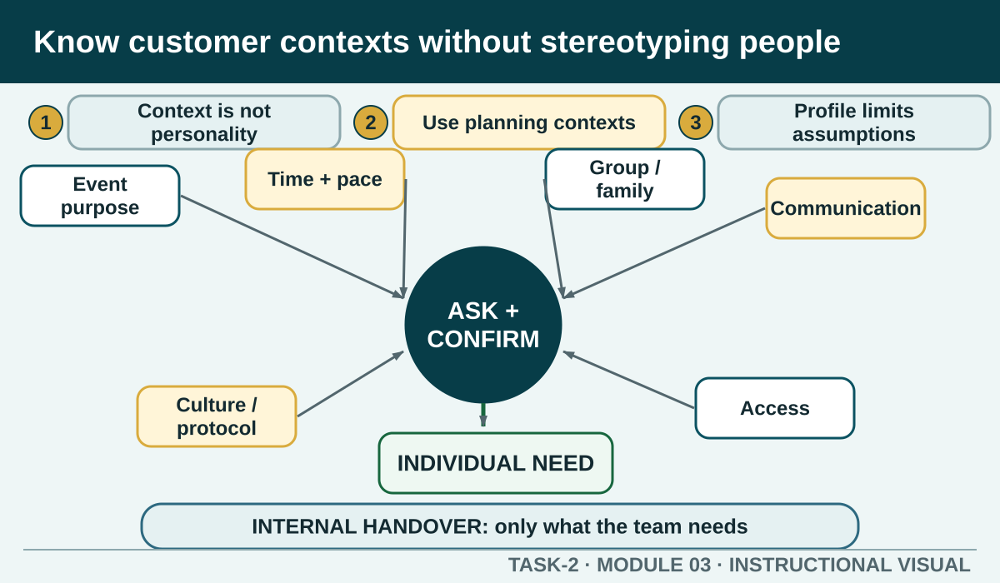

Prior learning
Students can describe service standards and the effect of accurate internal handovers.
Task 2 · Lesson 3 of 8
Use customer categories and profiles as planning tools while still treating each individual customer as the authority on their own needs and preferences.
Prior learning
Students can describe service standards and the effect of accurate internal handovers.
Success criteria
Learning boundary
This lesson supports preparation and formative practice. The current authorised package and trainer/assessor control formal products, observations, dates and submission.
Hospitality businesses may describe customer contexts such as leisure, business, group, local, international and repeat customers. These categories can help plan staffing, information, space and product ranges. They do not tell a worker exactly what an individual will want.
A business customer may have limited time, but another may be hosting a long meeting. A leisure customer may be exploring options, but another may need a quick meal before an event. The service skill is to use context as a reason to ask a useful question, not as permission to assume.
Leisure customers may be visiting for enjoyment, relaxation or an event. Business customers may connect the service to work, travel or meetings. Group customers may need coordinated seating, ordering, timing or payment information. Local customers may know the area or return regularly. International customers may benefit from clear explanations of unfamiliar products or processes. Repeat customers may bring known history, but current details still need confirmation.
A customer profile is a description of a typical or intended customer group. It may combine patterns such as visit purpose, commonly requested price range, preferred service channel or products that sell well. It helps a business plan options, information and promotion.
A profile is based on patterns, so it carries a risk: workers can start treating a generalisation as a fact about the person in front of them. Profiles should influence the questions a business prepares, not replace the conversation with the customer.
Worked Example
Internal customers include the people and work areas that depend on your work. Floor staff, kitchen staff, beverage staff, reception, supervisors and the next shift may all exchange information. Their needs are usually accuracy, timing, usable records and a clear escalation path.
Serving an internal customer well does not mean agreeing with everything. It means providing the information or action required for safe, accurate work and asking when instructions conflict.
The authorised source links a positive customer experience with loyalty, reviews, reputation and business growth. A repeat customer may value recognition, but recognition must stay accurate and respectful. A remembered preference should be confirmed because products, circumstances and customer choices can change.
Feedback from repeat customers can show a pattern over time. It should still be recorded through the authorised process rather than held only in one worker's memory.
When you notice yourself predicting what a customer needs, pause and convert the prediction into a neutral question. This protects dignity and usually produces more useful information.
Questions should be relevant to the service. Avoid asking for personal information that is not needed. For a group booking, ask about number of guests and relevant service requests—not why people belong to the group.
Phone view: swipe across the diagram, or use Open larger below.

Formative practice
Each option explains the workplace consequence. These responses save on this device.
Written application
Use one category from the source, but describe a planning decision rather than assigning a personality to the customer.
Self-checkApply and keep evidence
Match a customer's stated need to a respectful clarifying question and a suitable service response.
Use the check result, activity record and written response as formative learning evidence only. Formal evidence remains controlled by the current package and trainer/assessor.
Authorised source note: Grounded in T2-S03 and the internal-customer language already used in T2-S10. Category descriptions are deliberately neutral and must not become assumptions about an individual.